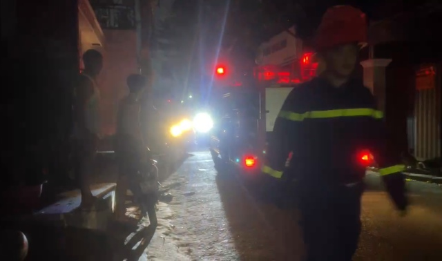

TP.HCM: Cháy nhà trọ ở Q.Gò Vấp trong đêm
Thứ tư, 11/08/2023, 10:00 (GMT+7)
Ngày 11.8, Đội Cảnh sát PCCC và cứu nạn, cứu hộ Công an Q.Gò Vấp phối hợp các đơn vị liên quan làm rõ nguyên nhân và thiệt hại từ vụ cháy nhà trọ trên địa bàn. Trước đó, khoảng 20 giờ 30 ngày 10.8, người dân sống trên đường số 3, P.9 (Q.Gò Vấp) giật mình khi nghe nhiều tiếng nổ lớn kèm theo khói lửa. Đường điện trong khu vực bị ngắt hoàn toàn. Chạy đến kiểm tra, họ phát hiện khói bốc lên cao nghi ngút tại nhà trọ 3 tầng ở địa chỉ 198/78 đường số 3. Vị trí cháy sau đó được xác định phát ra gần khu vực thang máy ở tầng 2. Người dân xung quanh hô hoán để người trong nhà kịp thoát ra khỏi đám cháy bằng lối cầu thang bộ. Đồng thời, nhiều người tìm cách dập lửa.
Nhận tin báo, Đội Cảnh sát PCCC và cứu nạn, cứu hộ Công an Q.Gò Vấp điều phương tiện cùng cán bộ chiến sĩ đến hiện trường phối hợp lực lượng tại chỗ cứu nạn, chữa cháy. Đến khuya cùng ngày, hiện trường đám cháy được xử lý. Nhận định ban đầu, có thể do chập điện dẫn đến cháy nổ khu vực gần thang máy. Được biết, căn nhà trọ xảy ra cháy có kết cấu 3 tầng, ngăn thành 8 phòng để cho thuê với khoảng 20 người lưu trú. Khi xảy ra cháy, người trong nhà kịp thoát ra ngoài nên không xảy ra thương vong. Nguyên nhân cũng như thiệt hại từ vụ cháy nhà trọ đang được lực lượng chức năng làm rõ.
Giới thiệu
Tell Ur Mom II - Winno ft. Heily「Cukak Remix」/ Audio Lyrics Video
Follow Me

Liên hệ
Điện thoại: 0987654321
Email: web1013@dinhnt.com